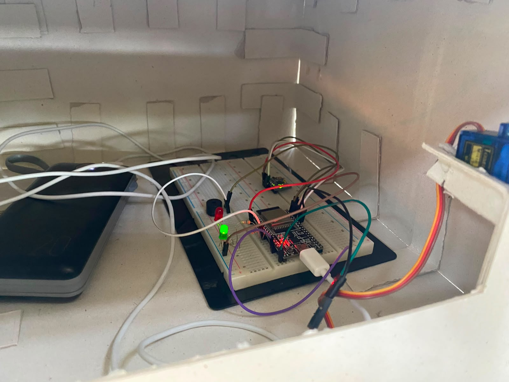
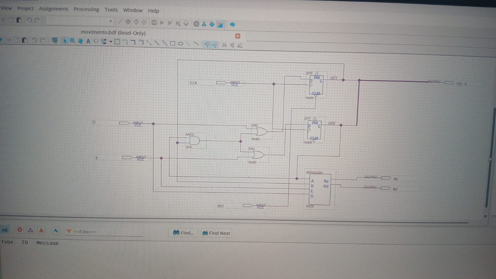
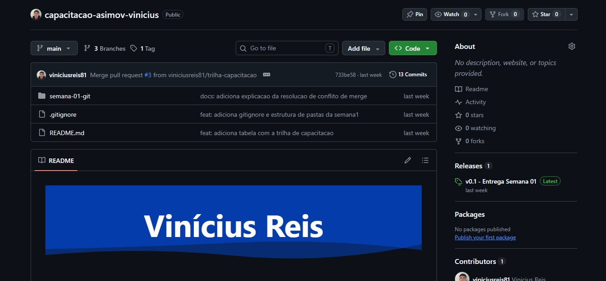

Controlador de Sistema Antifurto (ESP32)
Desenvolvimento de um sistema antifurto com conectividade Wi-Fi, utilizando o microcontrolador ESP32 para controle de acesso.

Olá! Meu nome é Vinícius Reis, um amante de tecnologia e estudante de engenharia de controle e automação na UNIFEI. Atualmente, atuo como trainee de Desktop da Asimov Jr e membro da diretoria de Eventos do CAECA. Minhas experiências práticas estão ligadas ao setor administrativo e financeiro, programação, eletrônica digital, programação embarcada e Inteligência Artificial. Hoje, meu foco é aplicar esses conhecimentos nas áreas da tecnologia e industrial, e assim, construir um repertório vasto para o meu grande objetivo profissional, que é atuar no setor de Óleo e Gás(Offshore), desenvolvendo tecnologias que otimizem processos complexos.
Desenvolvimento de um sistema antifurto com conectividade Wi-Fi, utilizando o microcontrolador ESP32 para controle de acesso.

Projeto e simulação da lógica de controle digital utilizando o software Intel Quartus Prime, visando implementação futura em hardware FPGA.

Estruturação de repositório com Git, aplicação de Conventional Commits, resolução manual de conflitos de merge e criação de README estruturado.

Ver Repositório2026 — Presente
Capacitação técnica em programação (Python, C, HTML/CSS, TypeScript) e outras ferramentas tecnológicas(MongoDB, FireBase, Angular e Tailwind).
2025
Atuação nas rotinas administrativas, controle financeiro e auxílio operacional nas máquinas da torrefação.